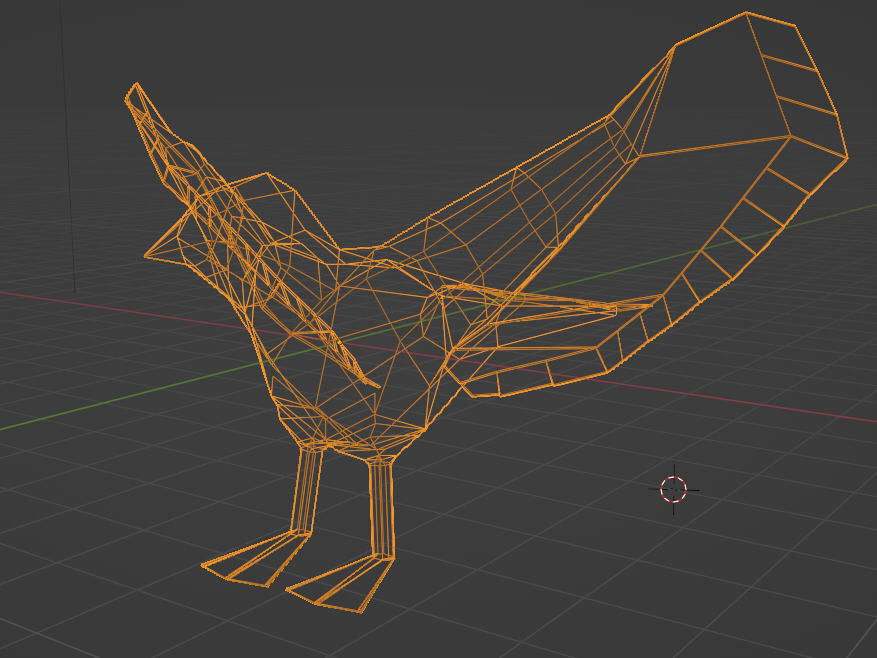

Virtual Reality one of the many optional courses for my 3rd year in uni that I took, I was pleased that I did! In this project, I created a small demo game utilising the Meta Quest Headset in Unity
You can read my report on this project here
This video below shows my VR demo in Unity, the premise of the game is simple kill the birds before they steal your chips and bring them back home.
I was able to implement the VR system into Unity using its XR plugin and by using the occulus plugin within I was able to import my VR headest controls into Unity allowing me to run Unity on the equipment. For this project, I had the opportunity to explore the process of rigging and animating characters to be used in Unity. I decided to make a bird character for my game which has been tectured, rigged and finally animated.
I have modelled and animated the birds in a blender and using a state machine I have programmed their behaviour to interact with the player. They have 4 states, idle, walking, chasing and fleeing, for each state I have created a different animation in Blender, which the bird transitions between them depending on the state.